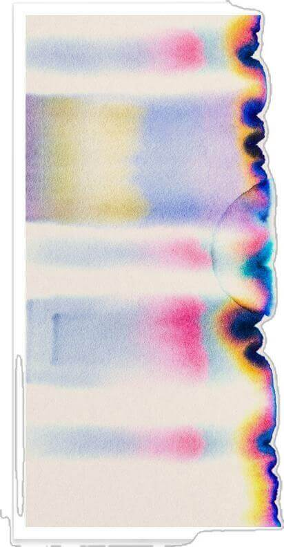
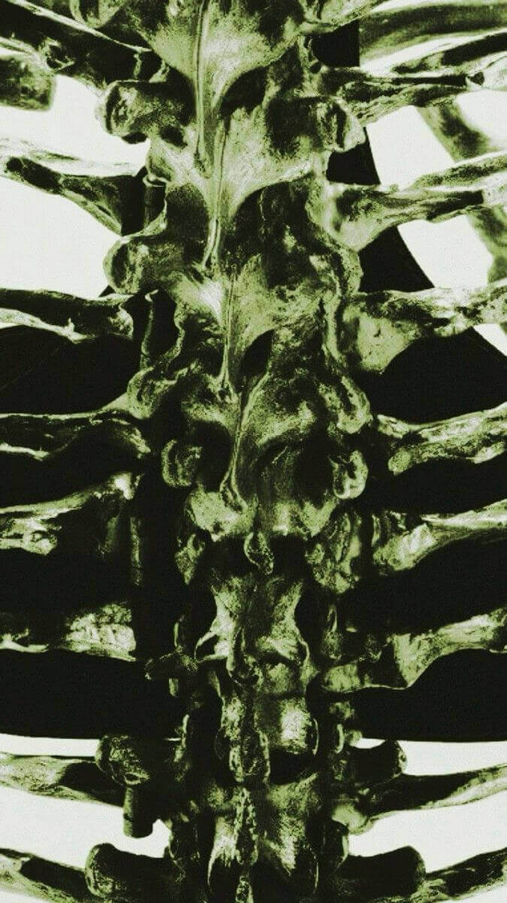
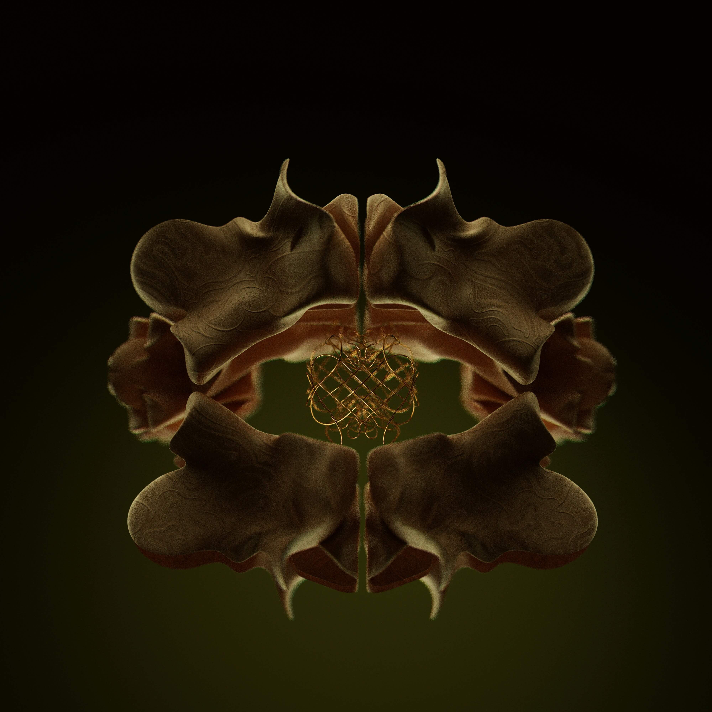

Structure / HTML Tag Relay
This exercise focused on HTML as framework: headings, paragraphs, images, lists, and links became the architectural skeleton of the site. It taught me to think in sections, containers, and semantic order.

These workshop studies document how code becomes visual structure. Across the exercises, I tested hierarchy, spacing, responsiveness, layering, and the expressive potential of simple HTML and CSS elements.
This exercise focused on HTML as framework: headings, paragraphs, images, lists, and links became the architectural skeleton of the site. It taught me to think in sections, containers, and semantic order.

Here I explored surface qualities: typography, border weight, spacing, contrast, and compositional mood. Rather than adding decoration for its own sake, I tried to make styling support atmosphere and clarity.

This experiment tested responsiveness and movement across screen sizes. I adjusted scale, stacking, and white space to keep the layout stable while still feeling open, flexible, and image-led.
